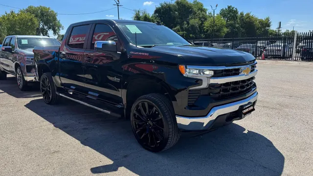

2023 Chevrolet Silverado LT
Black • ID CCH-10

1/2General
| Year | 2023 |
| Make | Chevrolet |
| Model | Silverado LT |
| Type | Truck |
| Color | Black |
| Mileage | 30,000 miles |
| Seats | 5 or 6 seats |
Engine & transmission
| Engine | 2.7L Turbo High-Output 4-cylinder |
| Power | 310 hp |
| Torque | 430 lb-ft |
| Transmission | 8-speed automatic |
| Drivetrain | To be confirmed |
| Fuel | Gasoline |
Capacities
| Max towing | 8,900 lbs |
| Fuel tank | 24 gallons |
| Fuel economy | 18/21 MPG (city/highway) |
Dimensions
| Length | 231.88 inches |
| Width | 81.24 inches |
| Height | 75.6 inches |
| Wheelbase | 147.45 inches |
Body
| Stock wheels | 17 inches |
Visible in the photos
- Crew cab
- Running boards
- Large black wheels
- Tow hitch
Great for
Everyday driving and work, with a modern look.
Specs for this model/trim per manufacturer and automotive media. Confirm this unit’s exact specs with the dealer.
Motor estándar (RPO) del trim LT según fichas de Chevrolet (2.7L Turbo HO: 310 hp / 430 lb-pie, automática de 8). Tracción no confirmada: RWD de serie, 4x4 opcional.
Versión 4WD según fichas de concesionario (tracción de la unidad no verificada; la 2WD es 19/22 MPG). Rines estándar de 17 pulgadas (20 pulgadas opcionales). / 4WD version per dealer listings (unit's drivetrain unverified; 2WD is 19/22 MPG). Standard 17-inch wheels (20-inch optional).